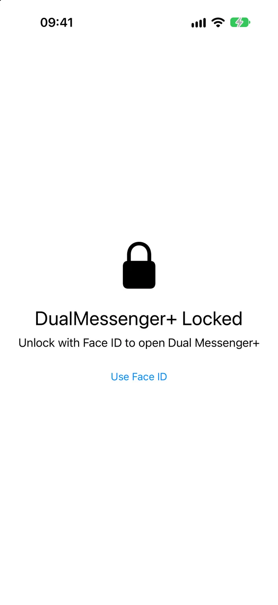
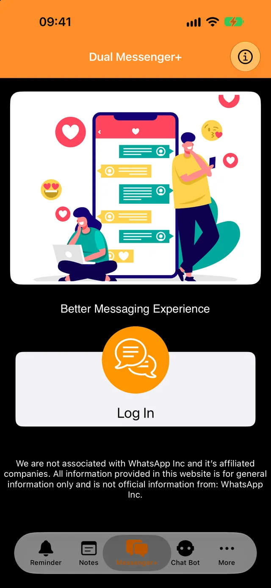
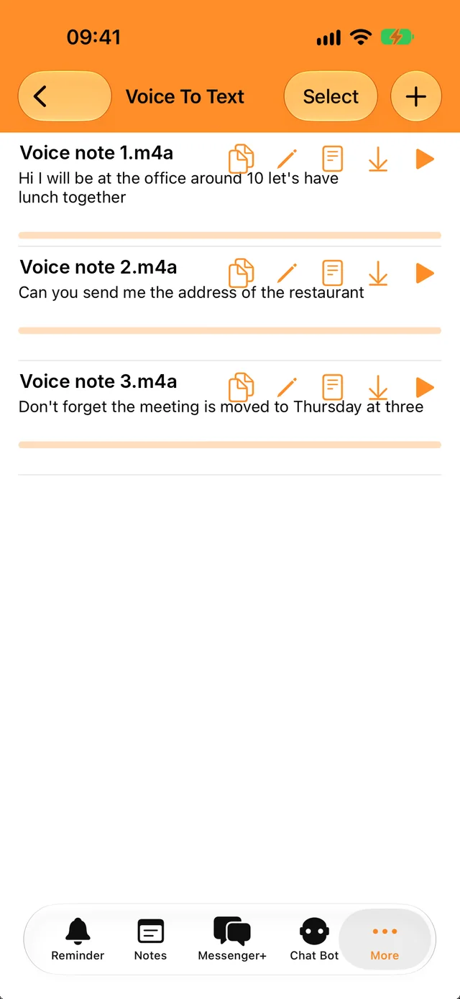
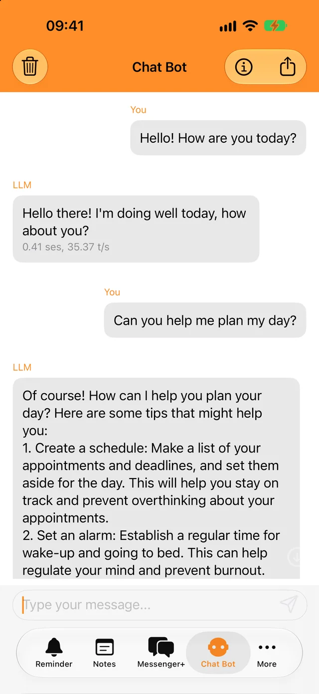
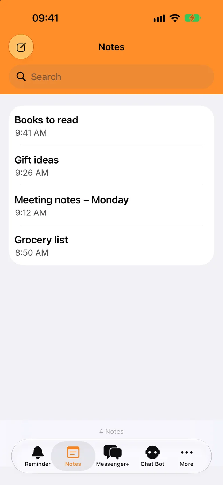

Lock it with Face ID or your passcode
Only you can open the app and your chats. Choose whether it locks right away or after a few minutes.
Add your second account in seconds and keep work and personal chats separate.
Free to download. For iPhone, iPad and iPhone Duo.

A lock for your chats and a few everyday tools, built into the same app.

Only you can open the app and your chats. Choose whether it locks right away or after a few minutes.

Transcribe voice messages and audio files in your language, then copy the text anywhere.

Ask quick questions, even offline. Your conversations with the bot never leave your phone.

Write things down, find them with search, and get a notification when a reminder is due.
You need the phone that has your second WhatsApp account, just for a moment.
Tap Log In. A QR code appears on the screen.
Go to Settings, then Linked Devices, and tap Link a Device.
Point that phone at the QR code. Your chats open in Dual Messenger+.
WhatsApp keeps a linked device signed in as long as you use WhatsApp on your phone at least once every 14 days.
Dual Messenger+ has no servers that see your messages. There is no account to create, and the app has no ads or trackers.
Notes, reminders, recordings and bot conversations are saved on your iPhone or iPad.
You don’t give us a name, an email address or a phone number.
Face ID and Touch ID are handled by your device. The app never receives biometric data.
Download Dual Messenger+ for iPhone and iPad.
Download on the App Store